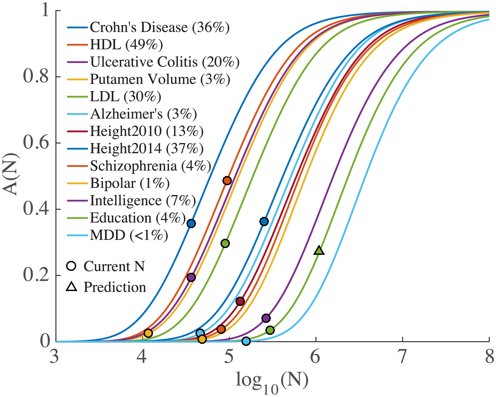

Daniel Roelfs
PhD Candidate
Outline
-
Neurodevelopment
Definition and focus
-
Imaging
Relevance and application
-
Genetics
Relevance and application
-
Imaging-genetics
1 + 1 = 3
-
Conclusions
Neurodevelopment
What is neurodevelopment and why is it relevant
Neurodevelopment
-
When does development happen
Throughout life pre-natal to the onset of neurodegeneration
-
Healthy vs abnormal
Defining what normal neurodevelopment looks like is essential to understand processes underlying psychopathology
Brain development
Height/weight growth chart
Brain "growth charts"
The brain and the onset of mental disorders

Age of onset of psychiatric disorders
Brain imaging
What imaging techniques can tell us about neurodevelopment
Brain imaging datasets

Imaging Modalities
-
T1
CSF is dark, grey matter appears bright

-
T2
CSF appears white, white matter darker shade of grey

-
DWI/DTI
Visualizes white matter tracts, areas with higher diffusion are brighter


-
fMRI
Areas with high activity (i.e. oxygen perfusion) are brighter

-
Others
e.g. PET, EEG, EMG

Challenges
- No standardized imaging protocol
- Different selection process and inclusion/exclusion criteria
- Few studies with longitudinal data
- Healthy controls don't necessarily stay healthy
- Scanner changes or upgrades
"The lack of tools for standardized assessment of brain development and ageing is particularly relevant to research studies of psychiatric disorders, which are increasingly recognized as a consequence of atypical brain development [...]"
Bethlehem et al. (2022)
Insights from imaging studies
- Detectable changes in surface areas associated with psychopathology already at age 9-10
- Difference in cortical thickness in various areas of the brain associated with neurodevelopmental disorders

Insights from imaging studies
- Changes in frontotemporal connectivity tracts in children from the PNC sample associated with cognition and psychopathology
- Alterations in myelination associated with pyschopathology measured already in adolescents

Insights from imaging studies
- Delay in network tuning process associated with neurodevelopmental disorders
- Decreased connectivity in areas associated with language processing in low-verbal ASD patients
- Alterations in connectivity associated with clinical symptom scores
Genetics
What genetic analysis can tell us about neurodevelopment
Twin-based studies
-
Similar genetics, similar environments
Or basically identical genetics in the case of monozygotic twins
-
Study the relative contribution of environment and genetics
Outcomes may change while environment remains relatively stable
-
Provides an estimate of heritability (h2TWIN)
Estimates are typically higher than heritability calulated from population samples
Twin-based studies
Twin-based heritability
Population-based studies

Genome-wide association studies
Post-GWAS analysis
Population-based studies
Polygenic Score
- Calculates the genetic predisposition for a trait
Population-based studies
-
GWAS
Identifies common genetic variants associated with a trait

-
SNP-based heritability (h2SNP)
Proportion of phenotypic variance attributable to additive effects of causal genetic variants
-
PGS
Based on GWAS summary statistics, identifies a "polygenic score" for a trait
Challenges
-
Sample size
For twin studies: there are only so many twins
one can studyFor GWAS: power to detect genetic influence may

be limited -
Healthy people don't stay healthy
Many disorders develop later in development
-
Population stratification
Family relations in the GWAS dataset introduce spurious assocations
Population-based studies
-
GWAS results
Heritability (h2SNP) for ASD = 11.8%, ADHD = 22%
PGS at young age has been associated with psychopathological symptoms related to neurdevelopmental disorders
-
Other GWAS results
Shared genetic architecture between various disorders
Genes mapped from GWAS significant SNPs associated with biological structures and processes relevant for neurodevelopmental disorders
Imaging-genetics
1 + 1 = 3
Why imaging-genetics
-
Neurodevelopment is complex
Connects the static nature of genetics with the elastic nature of brain features
-
Psychiatric disorders are multifaceted
No single modality is going to sufficiently describe the full complexity
-
Genetic factors affect brain features
Using a greater variety of biological traits to uncover etiology and progression
Why imaging-genetics
-
Combine findings from both domains
Connect the power of genetic association tests with
brain structure and/or functioning -
Boost discovery in either direction
Use PGS to help identify relevant imaging features,
use imaging signal to boost gene discovery -
Wide possibilities
Can use any imaging modality or genetic trait
Challenges
-
Same as previously mentioned
Lack of standard protocol, inclusion/exclusion criteria
-
Lack of datasets including both imaging and genetics
Requires resources and follow-up routines
-
Lack of datasets from
underrepresented populationse.g. Africa has <1 MRI scanner per million inhabitants
"Combination" approaches
-
Machine learning approaches
Use both imaging and genetic traits as features
-
Correlations
Correlations between genetic and imaging traits


"Enrichment" approaches
-
GWAS
Identifying SNPs and genes associated with imaging features
-
Compare genetic architecture
Using genetic correlations, conjunctional methods, estimate polygenic overlap
-
Improve PGS
Filter disease PGS based on imaging GWAS

Imaging-genetics studies
-
Shared genetic architecture for imaging and genetic traits associated with neurodevelopmental disorders
-
Identification of genes associated with both brain structure and neurodevelopmental disorders
-
Map SNPs identified using GWAS to biologically relevant processes
Conclusions
How does imaging-genetics help us understand principles of neurodevelopment?
Imaging-genetics
-
Genetics and imaging are both relevant for neurodevelopmental research
Both in healthy state and in psychopathology
-
Leveraging multiple modalities can improve our understanding of the mechanisms underlying neurodevelopment
Aids in the discovery of genetic variants and helps map the genetic findings to imaging features
From populations to patients
-
Translate population-level findings to indivdiuals
Abstractification will boost discovery, but some specification is required
-
Beyond PGS
Multimodal approaches offer better predictability
Future directions
-
Larger samples
Improves statistical power for both imaging and genetics
-
Longitudinal data
Study the changes within individuals to better map different conditions in absence of genetic changes
-
Progress is incremental
Development of methods, larger datasets with both imaging and genetics, and better understanding of psychopathology